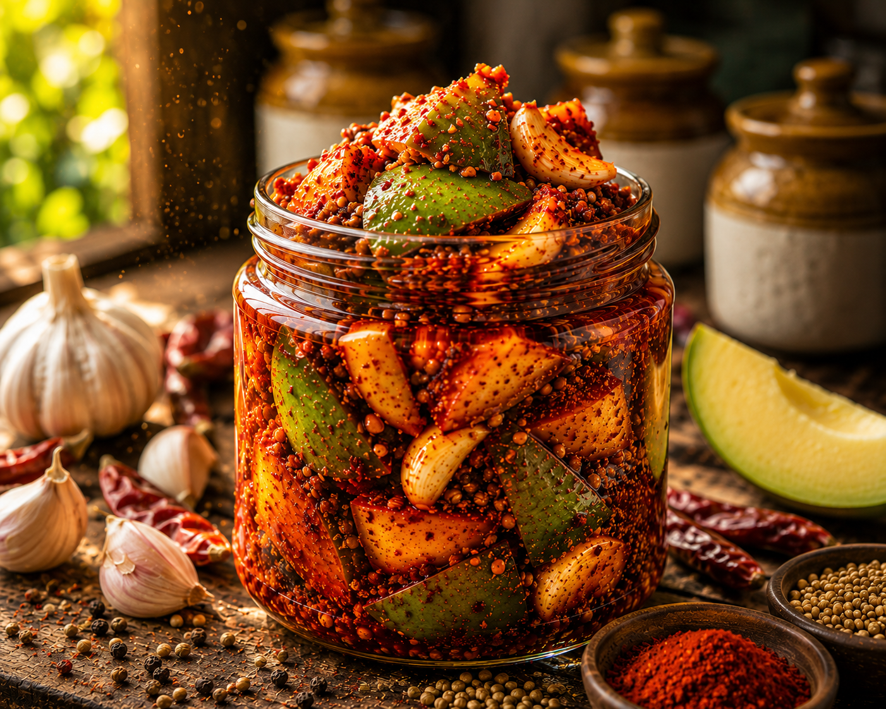
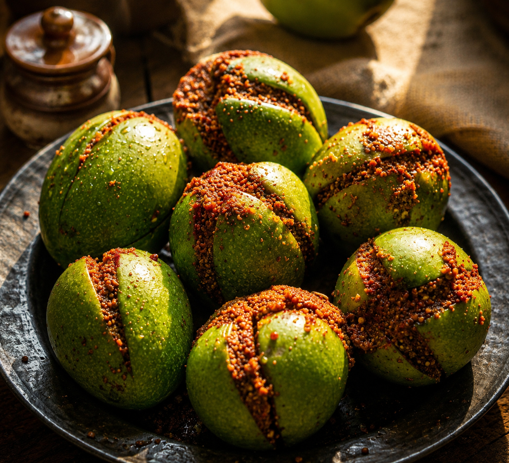
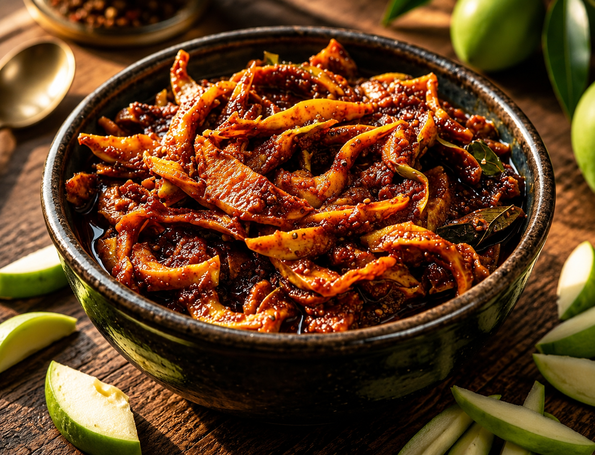
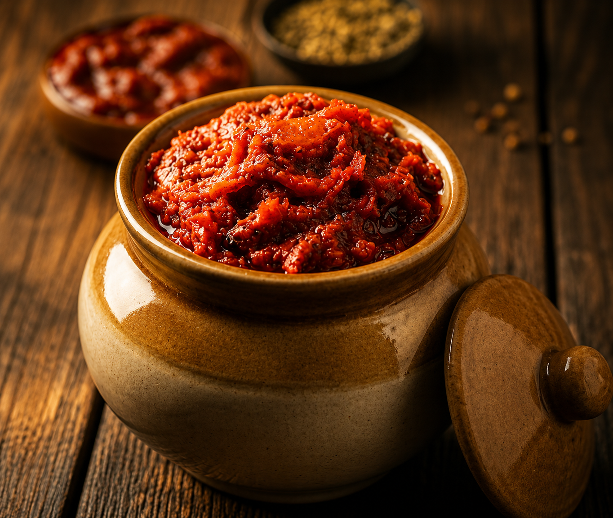
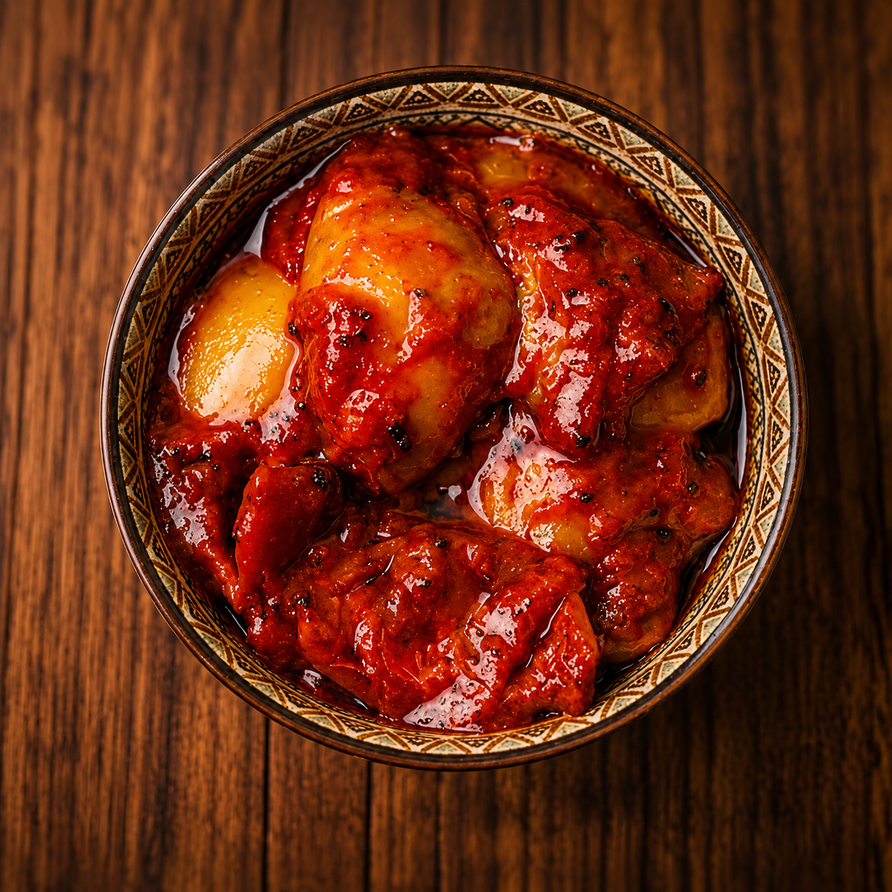
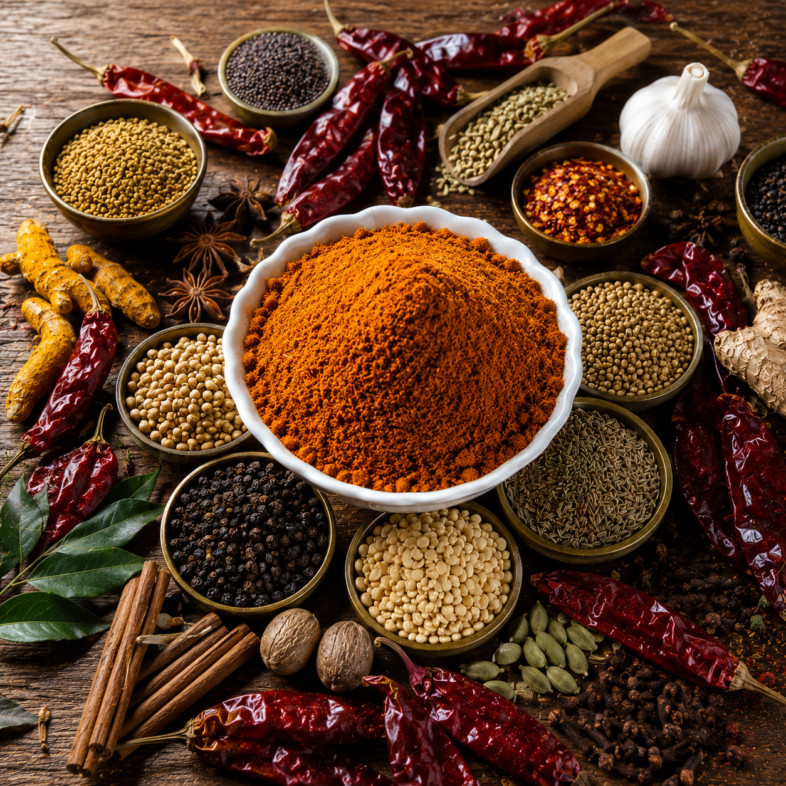
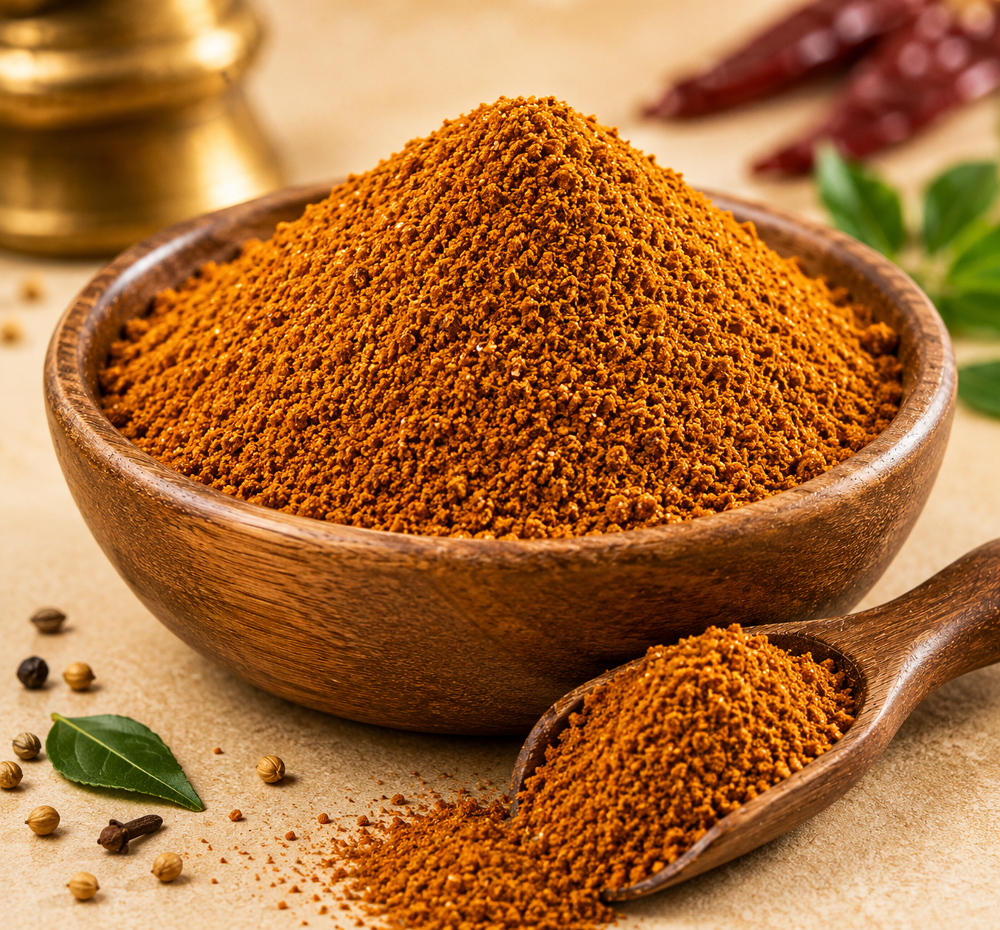

Avakaya Multiverse is a flavourful space where every jar of pickle represents the rich culinary heritage of Andhra kitchens. At SwadhPickles, we prepare traditional pickles using pure sesame (til) oil, fresh ingredients, and time-tested homemade methods with no added preservatives. Pickles are more than just a side dish in Telugu households. A small spoon of pickle with hot rice and ghee can turn a simple meal into something unforgettable. Here is our carefully crafted pickle menu, each with its own taste, tradition, and story.

A delicious twist where small Garlic are added to mango avakai. The Garlic absorb the spicy masala, giving the pickle a slightly sweet and sharp taste.

A traditional variation where mango pieces are cut smaller, allowing the spices to penetrate deeply, creating an intense and rich flavour.

A fresh and vibrant version of avakai, made with raw green mangoes and a lighter spice mix. Perfect for those who enjoy natural mango flavour with balanced heat.

The king of pickles. Fresh raw mango pieces are mixed with mustard powder, red chilli powder, salt, and sesame oil. This bold and spicy pickle is a classic favorite with rice and ghee.

A unique Andhra speciality combining jaggery (Bellam) with mango pickle spices. It creates a beautiful balance of sweet, spicy, and tangy flavours.

A special preparation where green gram (Pesara pappu) is mixed with mango pieces and spices, adding a nutty texture and rich taste.

This version includes lentils blended with the mango pickle mixture, creating a thicker masala that coats the mango pieces beautifully.

A pickle flavoured with fenugreek seeds (Menthi), known for their slightly bitter yet aromatic taste that enhances the overall flavour.

A sun-dried mango pickle where the mango pieces are dried before mixing with spices. This process gives deep, concentrated mango flavour.

A richer version of magayi prepared with extra sesame oil, making the pickle smoother and longer lasting.
Made from the famous sorrel leaves (Gongura) of Andhra Pradesh, this pickle is tangy, spicy, and extremely popular with rice.

A homemade favorite made with ripe tomatoes, red chillies, and spices. It offers a perfect balance of tangy and spicy flavours.

Prepared from tender tamarind (Chintakaya), this pachadi has a sharp tanginess that pairs beautifully with hot rice.

A spicy pickle made with red chillies, blended with spices and sesame oil for a fiery kick.

A classic lemon pickle, soaked in salt and spices until the lemons soften and absorb rich flavours.

A traditional citron pickle, known for its thick peel and strong citrus aroma.

Made from gooseberries (Amla), this pickle is both flavourful and nutritious

A famous ginger chutney, known for its spicy warmth and digestive benefits.

A traditional Andhra spice blend made from roasted coriander, cumin, black pepper, red chilies, garlic, and aromatic spices. This flavorful powder creates a tangy, spicy, and comforting rasam with a rich aroma, bringing the authentic taste of Andhra home cooking to every meal.

A traditional South Indian spice blend made from roasted coriander, lentils, red chilies, cumin, and aromatic spices. This flavorful powder adds rich taste, vibrant aroma, and authentic homemade goodness to sambar and a variety of vegetable dishes.

A fragrant blend of carefully selected whole spices including cardamom, cloves, cinnamon, black pepper, and cumin. This versatile masala enhances curries, gravies, and rice dishes with its rich aroma and warm, authentic flavor.

A traditional Andhra curry spice blend made from roasted chilies, coriander, cumin, garlic, and aromatic spices. This flavorful masala gives vegetable and meat curries a rich taste, vibrant color, and authentic homemade aroma.
.png)
A nutritious spice powder made from roasted sesame seeds, lentils, red chilies, and traditional seasonings. Its rich nutty flavor and aromatic taste make it a perfect accompaniment for hot rice, ghee, idli, and dosa.

A classic Andhra spice powder prepared with roasted toor dal, red chilies, garlic, and aromatic spices. This protein-rich blend offers a bold, savory flavor that pairs perfectly with hot rice and a spoonful of ghee.

A flavorful South Indian spice blend crafted with roasted spices, lentils, and aromatic ingredients. Specially prepared for brinjal rice, it delivers a rich aroma and authentic taste that elevates every meal.

A tangy and aromatic spice blend made with roasted lentils, spices, and traditional seasonings. Perfect for preparing flavorful lemon rice and pulihora, it brings the authentic taste of Andhra festive cuisine to your table.

A wholesome spice powder made from fresh curry leaves, roasted lentils, red chilies, and aromatic spices. Rich in flavor and nutrition, it adds a delicious homemade touch to rice, idli, and dosa.

A refreshing blend of traditional spices and herbs specially crafted for buttermilk. This flavorful mix adds a savory, aromatic taste and transforms ordinary buttermilk into a cooling and delicious drink.

A unique Andhra-style spice blend made with Indian gooseberry, roasted spices, and red chilies. This flavorful mix offers a perfect balance of tangy, spicy, and savory notes while retaining the goodness of amla.
.png)
A nutritious spice powder prepared from moringa leaves, roasted lentils, red chilies, and traditional seasonings. Packed with natural goodness, it delivers a rich flavor and pairs wonderfully with rice and ghee.
.png)
A traditional Andhra spice powder made with bitter gourd, roasted lentils, red chilies, and aromatic spices. This flavorful blend offers a distinctive taste with a balanced spicy kick, making it a healthy and delicious accompaniment to rice.

A traditional Andhra delicacy made from fresh tender tamarind leaves (Chintha Chiguru), carefully dried and blended with roasted lentils, red chillies, garlic, and aromatic spices. Known for its unique tangy flavor and rich aroma, this homemade spice powder brings the authentic taste of Andhra kitchens to every meal. It pairs perfectly with hot rice, ghee, idlis, dosas, and chapatis.

Traditional sun-dried crisps made from fresh Ash Gourd (Gummadi) mixed with urad dal and spices. These vadiyalu are light, crunchy, and mildly flavourful, perfect when deep-fried and served with hot rice and dal.

Classic sago (Sabudana) crisps prepared by soaking saggu biyyam and blending it with spices before sun-drying. When fried, they puff up beautifully into crispy, airy snacks that pair wonderfully with meals or can be enjoyed as a crunchy snack

A Pellala Vadiyalu, also known as Pela Vadiyalu, is a traditional Andhra snack made with popped rice, saggubiyyam (sabudana), green chillies, and ajwain (vamu). The mixture is shaped into small discs and sun-dried, then deep-fried to enjoy as a crunchy side with meals.

A traditional South Indian delicacy made by soaking premium green chillies in seasoned buttermilk, followed by careful sun-drying to achieve their distinctive flavor and texture. These chillies develop a unique tangy, salty, and mildly spicy taste that transforms into a crispy, aromatic accompaniment when fried. A timeless favorite in Andhra households, Buttermilk Chillies pair perfectly with curd rice, dal rice, pongal, and other traditional meals.

A Pellala Vadiyalu, also known as Pela Vadiyalu, is a traditional Andhra snack made with popped rice, saggubiyyam (sabudana), green chillies, and ajwain (vamu). The mixture is shaped into small discs and sun-dried, then deep-fried to enjoy as a crunchy side with meals.

Traditional Andhra sun-dried crisps made from urad dal batter and aromatic seasonings. When fried, they become light, crunchy, and delicious, adding a delightful crunch to everyday meals and festive feasts.
✔ Pure Sesame Oil
✔ No Preservatives
✔ Homemade Recipes
✔ Fresh Ingredients
✔ FSSAI Certified & Hygienically Prepared
✔ Delivery available all over India